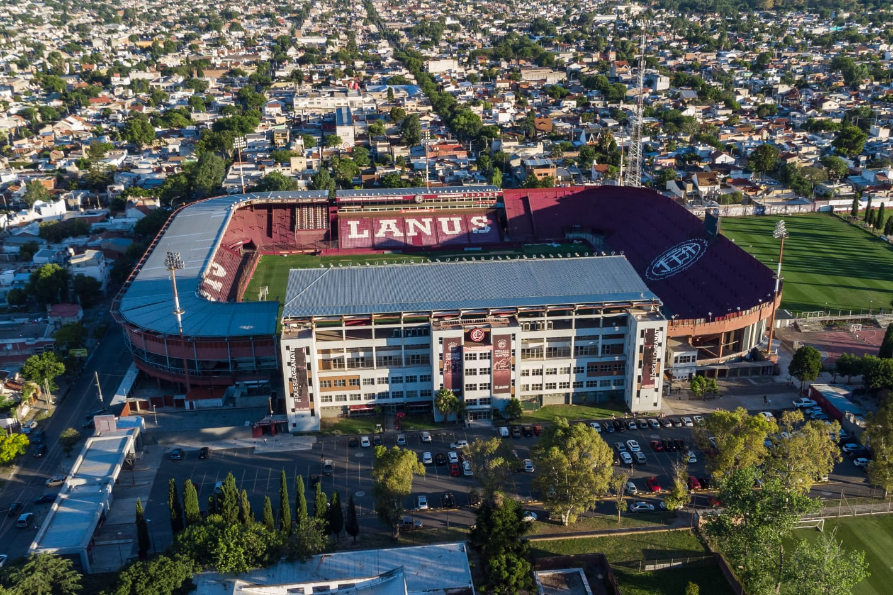
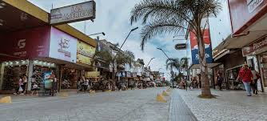
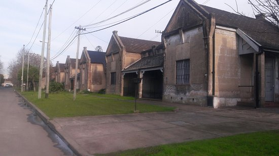

Estadio Ciudad de Lanús:

Conocido como "La Fortaleza", es el hogar del Club Atlético Lanús y un hito deportivo de la región.
Lanusita:
Un polo de bares y restaurantes ubicado en el corazón de Lanús Oeste que atrae a visitantes de toda la zona sur.
Peatonal 9 de Julio:

El centro comercial y social más importante de Lanús Este.
Barrio Inglés "Las colonias":

Ubicado en Remedios de Escalada, destaca por su arquitectura de estilo ferroviario británico.